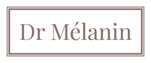

Trade Mark Journal No.2025/011 14 March 2025
UK00004167311 28 February 2025 (3,5,44)

- Class 3
- Skin moisturizer; Skin moisturiser; Skin moisturizers; Skin moisturisers; Skin lighteners; Skin lotion; Skin lotions; Lotions for the skin; Skin creams; Creams for the skin; Skin cleansers; Skin make-up; Skin hydrators; Skin emollients; Skin toner; Skin cream; Skin moisturizer masks; Oils for the skin; Skin toners; Cosmetics for use in the treatment of wrinkled skin; Skin masks; Skin cleansing lotion; Exfoliants for the care of the skin; Skin soap; Cosmetics for protecting the skin from sunburn; Skin moisturizers used as cosmetics; Creams for tanning the skin; Colour cosmetics for the skin; Skin lightening creams; Skin conditioners; Skin foundation; Skin cleansing cream; Cosmetic creams for dry skin; Skin cleansers [cosmetic]; Cosmetic creams for the skin; Skin creams [cosmetic]; Skin creams [for cosmetic use]; Milky lotions for skin care; Skin texturizers; Exfoliants for the cleansing of the skin; Cosmetics for the treatment of dry skin; Skin toners [cosmetic]; Moisturizing preparations for the skin; Skin care cosmetics; Skin fresheners; Skin cream [for cosmetic use]; Skin whitening creams; Creams (Skin whitening -); Creams for firming the skin; Skin care mousse; Skin calming serum; Moisturising skin lotions [cosmetic]; Skin masks [cosmetics]; Non-medicated skin serums; Moisturising skin creams [cosmetic]; Skin balms [cosmetic]; Cream for whitening the skin; Whitening the skin (Cream for -); Cosmetics for use on the skin; Skin care creams [cosmetic]; Cosmetic creams for skin care; Skin care lotions [cosmetic]; Skin care oils [cosmetic]; Skin cleansers [non-medicated]; Skin clarifiers; Non-medicated skin creams; Skin creams [non-medicated]; Skin relief serum [cosmetic]; Skin cleansing foams; Non-medicated skin lotions; Skin lightening compositions [cosmetic]; Cosmetic creams for firming skin around eyes; Essences for skin care; Skin cleansing cream [non-medicated]; Skin emollients [non-medicated]; Smoothing emulsions for the skin; Foot masks for skin care; Skin recovery creams [cosmetics]; Cleansing milks for skin care; Cosmetic skin fresheners; Skin whitening preparations; Cosmetic skin enhancers; Skin care oils [non-medicated]; Perfumed oils for skin care; Clay skin masks; Oils for moisturising the skin after sunbathing; Hand masks for skin care; Skin care preparations; Skin fresheners [cosmetics]; Skin tonics [non-medicated]; Skin balms (Non-medicated -); Non-medicated skin balms; Cosmetic preparations for skin firming; Wrinkle removing skin care preparations; Skin softening preparations; Skin hydrators for cosmetic purposes; Non-medicated stimulating lotions for the skin; Cosmetic preparations for skin care; Skin care (Cosmetic preparations for -); Skin, eye and nail care preparations; Skin whitening preparations [cosmetic]; Non-medicated skin clarifying lotions; Skin cleaners [non-medicated]; Skin hydrators being injectable dermal fillers; Non medicated skin toners.
- Class 5
- Medicated skin lotions; Medicated skin creams; Medicinal creams for skin care; Skin care lotions [medicated]; Pharmaceutical skin lotions; Medicinal creams for the protection of the skin; Skin care oils [medicated]; Skin calming serum [medicated]; Skin tonics [medicated]; Skin relief serum [medicated]; Elixirs for calming the skin; Medicated ointments for application to the skin; Pharmaceutical preparations for use in dermatology; Antibiotic dermatological products; Dermatological pharmaceutical products; Dermatological preparations; Creams for dermatological use; Dermatological pharmaceutical substances; Therapeutic creams [medical]; Medicated lotions for treating dermatological conditions; Skin care creams for medical use; Medicated creams for treating dermatological conditions; Pharmaceutical preparations for treating skin disorders; Antimicrobials for dermatologic use; Reconstituted cells for clinical treatments for skin care; Medicated ointments for treating dermatological conditions; Reconstituted cells for medical treatments for skin care; Skin care (Pharmaceutical preparations for -); Pharmaceutical preparations for skin care; Acne creams [pharmaceutical preparations]; Pharmaceutical preparation for skin care; Gels for dermatological use; Acne cleansers [pharmaceutical preparations]; Skin grafts; Clay for treating skin conditions.
- Class 44
- Clinics; Medical clinic services; Clinic (Medical -) services; Clinic services (Medical -); Clinics (Medical -); Medical clinics; Health clinic services; Health clinic services [medical]; Medical and healthcare clinics; Cosmetic and plastic surgery clinic services; Medical treatment services provided by clinics and hospitals; Medical consultations; Medical treatment services; Medical consultation; Medical spa services; Medical services for treatment of the skin; Dermatology services; Physician services; Providing medical information in the field of dermatology; Provision of medical treatment; Health counseling; Skin care salons; Cosmetic laser treatment of skin; Laser skin tightening services; Laser skin rejuvenation services; Providing medical advice in the field of dermatology; Dermatological services for treating skin conditions; Skin care salon services; Cosmetic treatment; Cosmetic laser treatment for hair growth; Surgery; Surgery (Cosmetic -); Surgery (Plastic -); Cosmetic and plastic surgery; Plastic surgery services; Cosmetic surgery services; Surgical treatment services; Cosmetic treatment for the body.
Dr Melanine LTD